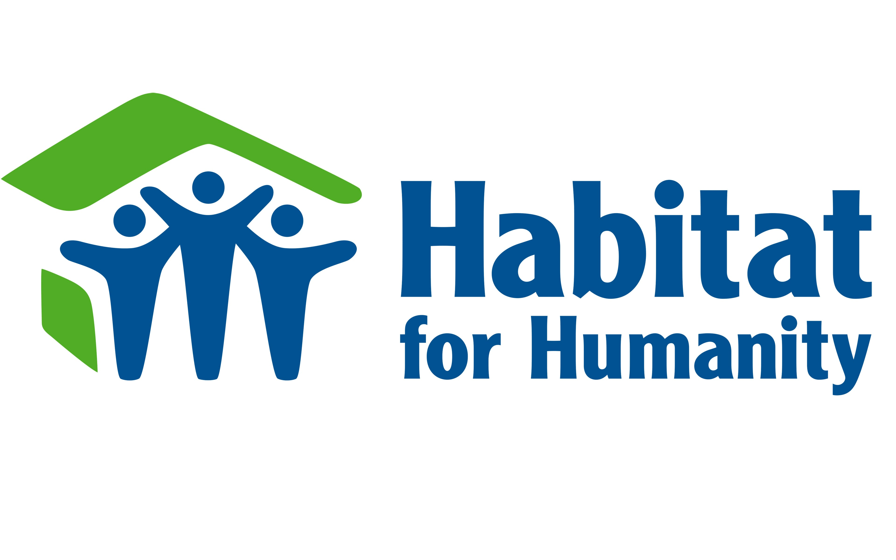
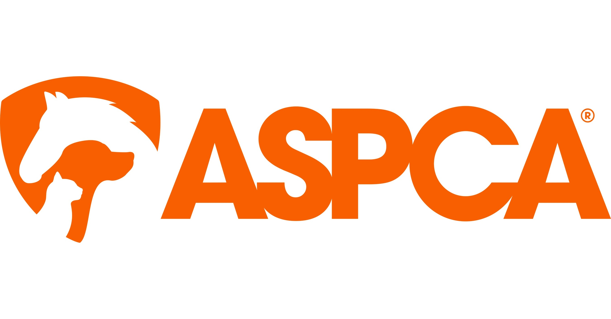
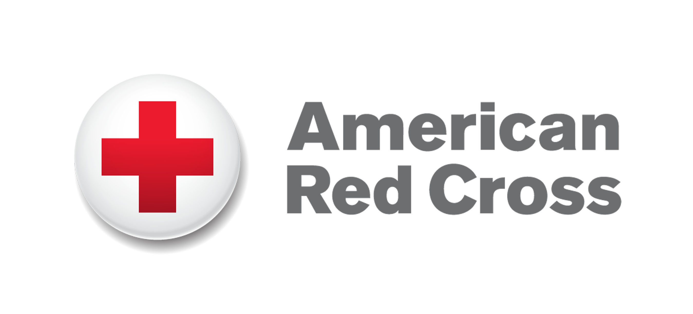

Feeding America is the largest hunger-relief organization in the United States. It works through a nationwide network of food banks to provide meals to millions of people struggling with hunger. Their mission is to end hunger by connecting communities in need with essential food resources and support services.

Habitat for Humanity
Habitat for Humanity is a global nonprofit that helps families build and improve places to call home. Volunteers and supporters work together to construct affordable, safe housing for people in need, creating stronger, more stable communities through homeownership and collaboration.

ASPCA
The American Society for the Prevention of Cruelty to Animals (ASPCA) is one of the oldest and most respected animal welfare organizations in the country. It is dedicated to rescuing animals from abuse, advocating for stronger animal protection laws, and supporting shelters through education and outreach.

American Red Cross
The American Red Cross provides emergency assistance, disaster relief, and disaster preparedness education. Volunteers are the backbone of the organization, helping with blood drives, shelter support, emergency response, and more in communities across the country.